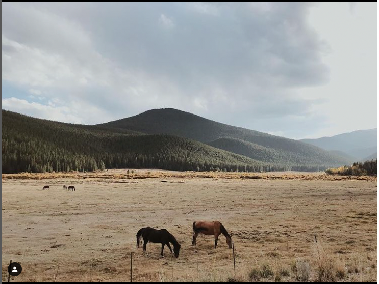

// About the Artist //
Thank you for visiting this page. Located in Denver, CO, Josh Luna uses solely Canon products (5D Mark IV along with L quality Canon lenses) to create beautiful images. I enjoy taking pictures and would be happy to create memories for you and your family.
